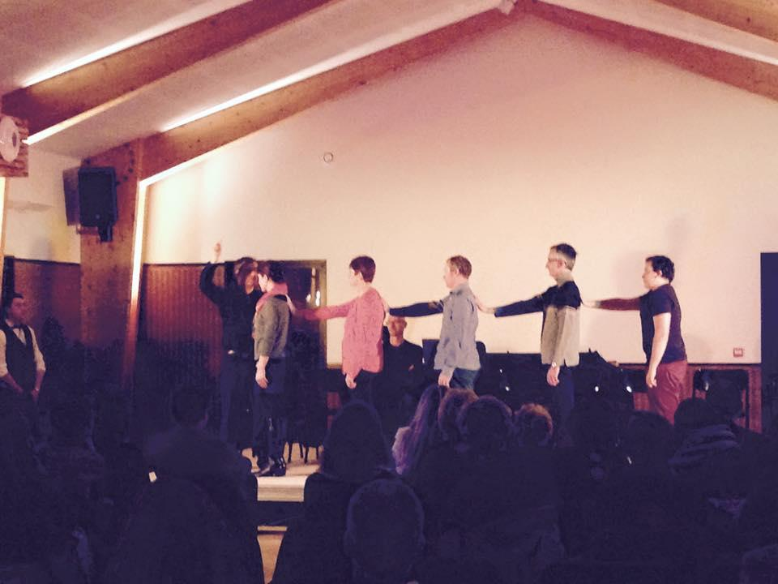
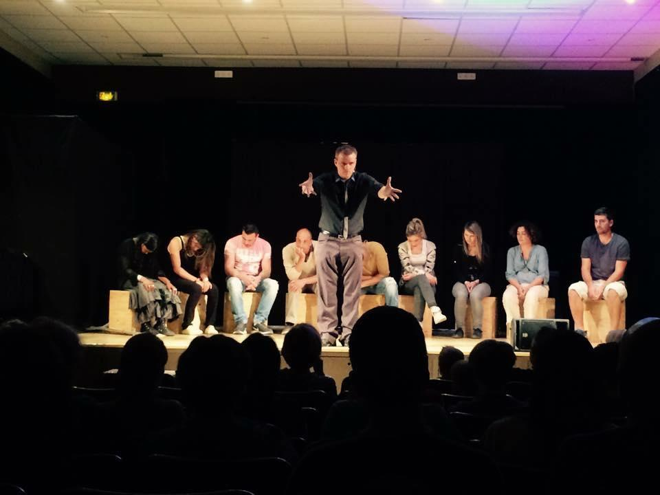
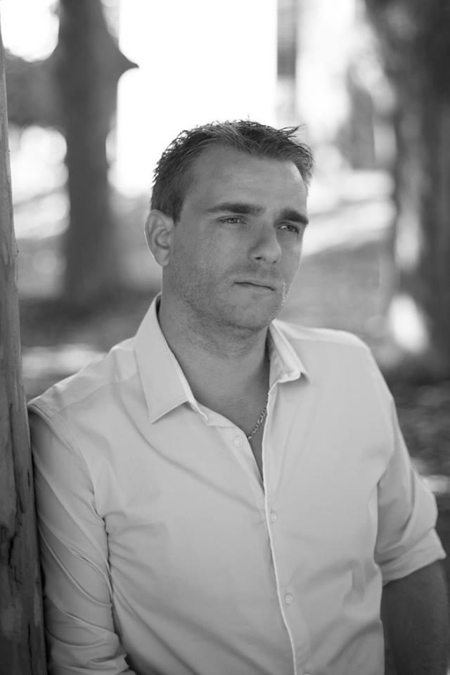
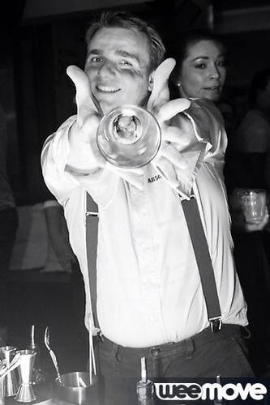

Teaser vidéo
Sommaire
Le spectacle
Durée du spectacle: Environ 1h40 (2x50 min) Type: Spectacle tout public, familial
Synopsis
Durant près de deux heures vous partagerez en groupe, une expérience hors du commun. Des plus interactif, ce spectacle d'hypnose aborde cette discipline comme rarement elle a pu être abordé.
- Endormissement en rafale, modification des sens, de la mémoire, du comportement.
- Des inductions hypnotiques liées à des sons d’ambiance pour plonger les sujets (ainsi que les spectateurs) encore plus loin dans l’action.
- Présence d’une application web pour repousser les limites de l’interactivité, le tout saupoudré de beaucoup d’humour et réalisé dans le respect le plus total des sujets et des spectateurs.
Tel est le programme du spectacle : Hypnose Xpérience.
Un show à dormir debout où les spectateurs découvrent le pouvoir de leur propre subconscient à travers ce moment plein de surprises, de rires et d’émotions.
Génèse
Pierr Cika est longtemps resté persuadé que l’hypnose n’était ni plus ni moins à la magie, que ce que le catch est au sport de combat, c’est-à-dire une mascarade scénarisée.
Et pourtant par curiosité ou soif de connaissance c’est en mai 2011 qu’il assiste à une conférence sur l’hypnose de spectacle, et voit certains de ses élèves et amis, effectuer des actions qu’il n’aurait jamais imaginé.
Convaincu dès lors de la véracité de cet art annexe à la magie, il y entrevoit déjà même une manière d’amener quelque chose de plus à ce type de spectacle.
Il se plonge alors dans trois années de travail sur cette discipline et avec son expérience en spectacle scénique il présente pour la première fois en juin 2014, Hypnose Xpérience.
L'hypnose
L'état d'hypnose chez un individu désigne un état modifié de conscience, distinct du sommeil. Selon les écoles, l'hypnose serait un état mental modifié ou un état imaginatif. L'état d'hypnose arrive généralement après une induction puis un approfondissement. L'hypnotiseur est la personne qui permet à l'hypnotisé de parvenir à cet état de conscience. Elle peut également être induite par la personne elle-même : on parle alors d'auto-hypnose. Ce terme associe les techniques permettant de créer cet état et les pratiques thérapeutiques utilisées pendant cet état.
Cependant, contrairement à une idée répandue selon laquelle l'hypnose est une forme d'inconscience ressemblant au sommeil, des recherches récentes suggèrent que les sujets hypnotisés sont pleinement éveillés et qu'ils focalisent leur attention.
Ils en parlent
« Merci Pierr pour le spectacle Hypnose Xpérience [...]. Je n'avais jamais assisté à un spectacle d'hypnose et j'avais des aprioris mais je reconnais que c'est impressionnant. J'ai beaucoup aimé ! L'utilisation de sons, de musiques et la participation du public encore éveillé, notamment avec l'application smartphone, contribuent à l'ambiance du spectacle durant lequel on est surpris et où on rit aussi.»
Bruno Hogier - 24 mai 2015
« Super impressionnant et super soirée pleine de rebondissements ! »
Rose-Marie Dedessus Les Moutier - 10 mai 2015
« Un grand moment de plaisir et de fou rire. Encore merci pour ce merveilleux moment. »
Cindy Gault - 23 mai 2015
L' artiste
Biographie
Magicien depuis l’adolescence, il est persuadé que les arts de la scène, ne deviennent réellement magiques que lorsqu’on les partage avec les spectateurs, C’est pourquoi tous ses show sont axés sur l’interactivité. Pierr Cika est né en France à Montpellier, le 29 Décembre 1983.
A l’âge de 15 ans, il croise la route d’un magicien qui lui enseigne une simple disparition de pièce, mais qui deviendra pour lui le début d’une passion, d’un métier, d’une vie.
Ses rencontres avec de grands noms de la magie mondiale tels que Bernard Bilis, Dany Lary, Gaetan Bloom ou encore le magicien Nord-Américain le plus primé au monde Michael Dardant, vont lui permettre de partager sa passion à haut niveau, afin d’être aujourd’hui un professionnel reconnu et respecté par ses pairs.
Membre de la FFAP (Fédération Française des Artistes Prestidigitateurs), il est l’auteur d’un ouvrage salué par certains des plus grands magiciens Français, sur la psychologie magique et les « trucs du métier ». C’est grâce à son expérience en rue, en restaurant ou sur scène, qu’il a également aidé plusieurs artistes prestidigitateurs à gagner des concours régionaux, nationaux et européens.
Elégant, sympathique et drôle, l’objectif de Pierr est d’emmener le spectateur, dans l’interactivité et la bonne humeur, à passer le meilleur moment possible, avec comme ligne de conduite : Travail, persévérance, humour et passion. Il est engagé par des professionnels du spectacle, mais aussi des entreprises ainsi que des particuliers et ce dans toute l’Europe Francophone et Anglophone.
Contact et liens utiles
Contact
Pierr Cika
+33 (0)6 61 20 32 28
Réseaux sociaux


Télécharger cette page